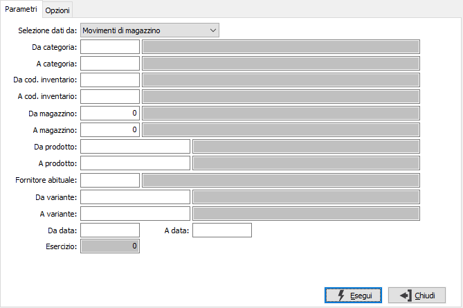
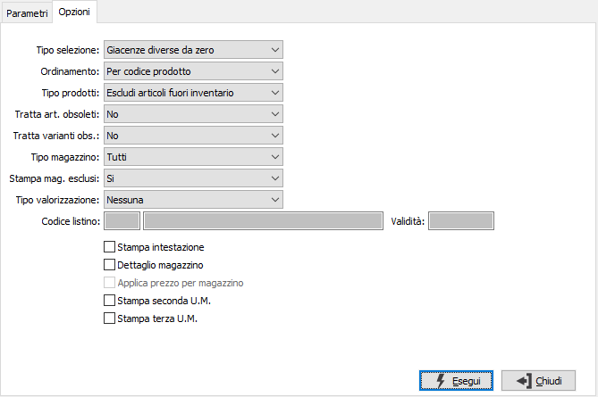

Stampa inventario varianti
Il programma produce la stampa dell'inventario per variante.

SELEZIONE DATI DA: indica da dove leggere i dati per la stampa: dai movimenti di magazzino oppure dai saldi progressivi per variante.
DA CATEGORIA: codice della categoria merceologica da cui si vuole iniziare la selezione di analisi. Sul campo è attiva la ricerca (F9) sulla tabella Categorie merceologiche.
A CATEGORIA: codice della categoria merceologica con cui si vuole concludere la selezione di analisi. Sul campo è attiva la ricerca (F9) sulla tabella Categorie merceologiche.
DA CATEGORIA: codice della categoria merceologica da cui si vuole iniziare la selezione di analisi. Sul campo è attiva la ricerca (F9) sulla tabella Categorie merceologiche.
A CATEGORIA: codice della categoria merceologica con cui si vuole concludere la selezione di analisi. Sul campo è attiva la ricerca (F9) sulla tabella Categorie merceologiche.
DA MAGAZZINO: codice del magazzino da cui si vuole iniziare la selezione di analisi. Confermando a vuoto, l’analisi inizia dal primo magazzino valido. Sul campo è attiva la ricerca (F9) F9 sulla tabella Magazzini.
A MAGAZZINO: codice del magazzino con cui si vuole concludere la selezione di analisi. Confermando a vuoto, l’analisi termina con l’ultimo magazzino valido. Sul campo è attiva la ricerca (F9) sulla tabella Magazzini.
DA PRODOTTO: codice dell'articolo, presente in anagrafica Prodotti, da cui si desidera iniziare la selezione di analisi. Confermando a vuoto, la selezione inizia con il primo prodotto valido. Sul campo è attiva la ricerca (F9) sull’anagrafica prodotti.
A PRODOTTO: codice dell'articolo, presente in anagrafica Prodotti, a cui si desidera terminare la selezione di analisi. Confermando a vuoto, la selezione termina con l’ultimo valido. Sul campo è attiva la ricerca (F9) sull’anagrafica prodotti.
FORNITORE ABITUALE: eventuale codice del fornitore abituale dei prodotti con cui si desidera effettuare la selezione dei prodotti. Sul campo è attiva la ricerca (F9) sull’anagrafica fornitori.
DA VARIANTE: codice della variante, da cui si desidera iniziare la selezione di analisi. Confermando a vuoto, la selezione inizia con la prima variante valida. Sul campo è attiva la ricerca (F9) sull’anagrafica varianti.
A VARIANTE: codice della variante con cui si desidera terminare la selezione di analisi. Confermando a vuoto, la selezione termina con l’ultima variante valida. Sul campo è attiva la ricerca (F9) sull’anagrafica varianti.
DA DATA: data da cui deve iniziare la selezione di analisi. Confermando a vuoto, l’analisi inizia con il primo movimento valido.
A DATA: data con cui si desidera terminare la selezione di analisi. Confermando a vuoto, l’analisi si conclude con l'ultimo movimento valido.
ESERCIZIO: indica l'esercizio da cui leggere i progressivi delle varianti, nel caso si sia optato per questo metodo di selezione dei dati.
Sulla seconda pagina sono presenti altre opzioni:

TIPO SELEZIONE: combo box per definire il tipo di esistenze da considerare. Valori ammessi: Tutti; Giacenze diverse da zero; Giacenze negative; Sottoscorta.
ORDINAMENTO PER: combo box per definire i criteri di ordinamento. Valori ammessi: Per prodotto; Per Descrizione prodotto; Per Magazzino; Per Categoria; Per Codice inventario; Per Variante.
TIPO PRODOTTI: combo box per definire la tipologia dei prodotti da elaborare. Valori ammessi: tutti, escluso prodotti fuori inventario, solo prodotti fuori inventario.
TRATTA ARTICOLI OBSOLETI: definisce come e se includere nell'analisi anche gli articoli obsoleti: Si, No, Solo obsoleti.
TRATTA VARIANTI OBSOLETE: definisce come e se includere nell'analisi anche le varianti obsolete: Si, No, Solo obsoleti.
TIPO MAGAZZINI: combo box per definire il criterio di selezione dei magazzini. Valori ammessi: Nessuna; Di proprietà; Di terzi.
STAMPA MAGAZZINI ESCLUSI: indica se nella selezione si desidera i magazzini normalmente esclusi dalla stampa dell’inventario. Valori ammessi: No, Si, Solo esclusi.
TIPO VALORIZZAZIONE: indica se si intende stampare il valore ed il prezzo dell’articolo; in questo caso sarà possibile selezionare solo uno fra i dei criteri di valutazione specificati di seguito.
PREZZO MEDIO: abilita la stampa della colonna relativa al valore calcolato a prezzo medio, casella con segno di spunta.
PREZZO ULTIMO CARICO: abilita la stampa della colonna relativa al valore calcolato a prezzo ultimo carico, casella con segno di spunta.
COSTO DI MERCATO: abilita la stampa della colonna relativa al valore calcolato a costo di mercato, casella con segno di spunta.
PREZZO MEDIO DI VENDITA: abilita la stampa della colonna relativa al valore calcolato a prezzo medio di vendita, casella con segno di spunta.
LISTINO: abilita la stampa della colonna relativa al valore calcolato a prezzo di listino, casella con segno di spunta.
CODICE LISTINO: Indica il codice del listino, presente sulla tabella Listini, da utilizzare in caso di stampa della colonna relativa al valore a prezzo di listino. Sul campo sono attive le funzioni di ricerca (F9).
DATA VALIDITÀ LISTINO: Indica la data da utilizzare per leggere il prezzo dal listino indicato in caso di stampa della colonna relativa al valore a prezzo di listino.
STAMPA INTESTAZIONE: Indica se stampare una pagina con i criteri di selezione della stampa, l’operatore che l’ ha eseguita, la data e l’ora (casella con segno di spunta).
DETTAGLIO PER MAGAZZINO: check box per definire i criteri di visualizzazione in caso di presenza in più magazzini dello stesso prodotto. Valori ammessi: vuoto = visualizza il totale dei magazzini; spunta = visualizza analiticamente i singoli magazzini.
APPLICA PREZZO PER MAGAZZINO: attivo solo se si sceglie di stampare il prezzo ed utilizzare il prezzo medio o costo ultimo: il prezzo in oggetto viene calcolato sul singolo magazzino e non generico per prodotto (casella con segno di spunta). In mancanza del prezzo medio/costo ultimo verrà utilizzato il prezzo medio/costo ultimo complessivo dell'articolo.
STAMPA SECONDA UM: definisce se stampare le quantità anche nella seconda unità di misura (casella con segno di spunta).
STAMPA TERZA UM: definisce se stampare le quantità anche nella terza unità di misura (casella con segno di spunta).